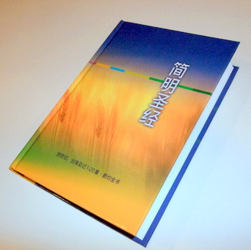

|  |
新译简明圣经
|
ABOUT THIS BIBLE (written by Gene Hsiao,
translator of Jian Ming Sheng Jing (Bible in simple and easy
to understand Chinese,
hereafter JMSJ) = The Holy Bible: A Dynamic Chinese Translation)
In 1991, I was touched by
the Holy Spirit and
started proclaiming the Gospel. When I tried to share the Good News with
Chinese speakers, they
often complained that Chinese translations of the
Bible were very hard to
understand.
After many prayers, I
decided to work on a new
Chinese translation. In the existing Chinese
versions, the translators tried to render each word in
the original text into
Chinese and to preserve the original word order and
sentence structure. The result is something
that doesn‘t sound like
Chinese, thus is not very understandable to the
Chinese reader.
In my rendition, I tried
to first get a thorough
understanding of the passage I was going to translate,
and then restate in
simple and easy to understand Chinese the events,
ideas, and truth it contains
according to the Chinese sentence structure, thought
pattern, and cultural
background.
I based my translation on The Holy Bible, the New
International Version and The New American Standard Bible. Then I checked the draft
against other English as well as Chinese versions
available to safeguard
against any discrepancy from the original. Even though the Bible
consists of 66 books, many Bible teachers, due to time
constraint, after
finishing Genesis and the first 20 chapters of Exodus,
go directly to the New
Testament. In order to help people
studying the Bible that way, after finishing the
translation of these parts in
July 2006, I had them published as one volume in Taipei.
RESPONSES TO THIS BIBLE:
Responses to this Bible
are very
enthusiastic. Below are some examples:
Many readers told us that
they would fall asleep
when trying to read other Chinese Bibles. But now JMSJ is so easy to understand
that once they pick it
up, they can‘t put it down.
Many people reported that
their family members,
relatives, or friends had accepted Jesus Christ after
reading JMSJ.
Ministers at Taipei Gospel Center for Services Workers told us that JMSJ was the kind of Bible
which they had been looking for and which could be
used to share the Gospel with
the masses.
An 86-year old believer
wrote us that JMSJ was easy to understand for the new
believer and for the less
educated.
An elementary school boy
in Central Taiwan won the first place in a regional writing
contest. When a reporter
interviewed and asked him, among
other things,
“What do you enjoy doing
most at your
leisure?”
The boy answered, “I
enjoy reading JMSJ the most.”
A mother in Southern Taiwan used to have her
eight-year boy watch TV on Saturday before
lunch. Then she got JMSJ and started reading it
together with him. When the lunch time
came, she said,
“Let‘s put the Bible away
and have lunch.” But her boy responded,
“No! Mom. I want to continue reading it!”
Churches started ordering JMSJ not only for their congregations, but
also for their ministries to
Mainland China.
A pastor calling to order JMSJ said, “The reason the Gospel is not being
spread fast in the
Chinese community is that not many Chinese are reading
the Bible. And the reason not many
Chinese are reading the
Bible is that Chinese Bibles are very hard to
understand. JMSJ is a Bible every church
should use.”
Many college as well as
theological seminary
students ordered JMSJ because their professors
considered it very well
translated and advised them to read it.
Rev. Dr. Stephen Tong,
well-known pastor and
evangelist invited us to distribute JMSJ at Huai-en T’ang Church, Taipei, where he was
giving a series of lectures
on the Bible from March to June 2007.
Hong Yu Chen , M.D., a
deacon at Columbia Chinese Baptist
Church, Maryland, wrote me, “I
have been searching for a
new Chinese translation for the Bible for a long time.
I learned about your
translation through the new version of Chinese Treasures by the Digital Bible Society. The English speaking Christians are
blessed by various
translations available to them. I think the Chinese
only speaking Christians
are very much handicapped by the old translation (the
Union Version first
published in 1919). Some other attempts have
not been too successful, in my opinion. I am happy you are willing and ‘brave’
enough to think ‘outside
the box,’ so your new translation is much more
readable. “ Again Dr. Chen wrote, “The more I read
your translation, the
more I appreciate the value of your effort. When I am reading your translation, it
seems there is a gentle,
kind, and compassionate elder in Christ who is so
excited about His Word that
he is very eager to help me understand the beauty of
His Word. I believe this
kind of natural outflow of Grace is one of the reasons
so many people are
touched by your new translation.”
Such responses are very
encouraging to me. So it is my plan to
complete the translation of
the whole Old Testament.
欢迎光临凸桑中文圣经协会网站。本协会是土 桑华人基督教会事工之一，致力於翻译及推广中文圣经。
Thank
you for visiting the official website of Tucson Chinese
Bible Society.
As a ministry of Tucson
Chinese Christian Church, we are dedicated to
the Chinese translation and distribution of The Holy
Bible.
原来用希伯来文和希腊文所写的圣经，包括旧约三十九卷丶新约二十七卷。但是传扬福音刻不容缓，而且许多大学学生团契在研读圣
经时，由於时间有限，读完旧约
第一卷《创世记》和第二卷《出埃及记》的一到二十章(谈到十诫)之後，就进入新约，因此《简明圣经》先出版这些部分，以满足
大学学生团契的需要。其他部分
以後再行增补。
这本圣经是以英文版一九八四年发行的The Holy Bible, New International
Version和一九七七年发行的New American Standard
Bible为基础，译出後再参考其他中丶英文版本，加以修改而成的。
翻译圣经基本上有两个方法：就是形式上的翻译和意义上的翻译。形式上的翻译 (formal equivalence translation, 或者 word-for-word translation)：是按照原文词语的次序和句子的结构，一个字一个字丶一个句子一个句子地翻译过来。意义上的翻译 (functional equivalence translation, 或者dynamic equivalence translation, 或者 thought-for-thought translation)：是全面了解经文之後，再把其中所叙述的事情丶所教导的真理丶和所使用的语气跟节奏，用中文的思考 方式和语言习惯表达出来。 我们翻译《简明圣经》就是采取这个办法。其他还遵照以下几个原则：
|
|
|
|
|
|
|
|
|
《马太福音》七章28,29节说犹太人对耶稣的教导很觉稀奇，因为他讲道的时候，很有权威，和摩西法律教师不同。《约翰福
音》七章46节也引用圣殿警卫的
话说，从来没有人讲话像耶稣那样令人敬畏的。我们可以从圣经知道，听耶稣讲道的人当中，有许多是属於下层社会的。他说话能震
撼他们的肺腑，首先当然是因为
他有超凡的能力，另外一个可能的原因是他所用的语言是新鲜丶活泼，容易明白的。因此，我们的翻译也尽量使用新鲜丶活泼丶容易
明白的语言，好让读者觉得里面
所写的事情，就像发生在他自己的时代丶自己的生活当中，因此其中的教导对他的生活丶做事丶为人也有帮助。
圣经是上帝藉着先知和使徒所写的，里面的经文完美无缺。然而要把它翻译到另外一种语言，难免有不完善的地方。所以我们翻译的
时候，一直祈求上帝的引导和从
他而来的智慧。现在我们更祈求他悦纳丶祝福这个译本，带领人们来阅读；使初读圣经的人容易了解福音的真理，熟读圣经的人有更
加深入丶正确的领悟。我们希望
所有读到这本圣经的人，都越读越喜欢读，越来越顺服上帝，越来越有平安和喜乐！
传扬福音是所有基督徒的使命。我们希望弟兄姊妹们对这个译本能提出建设性的批评和指正，让我们可以把它修改得更加准确易读，
使福音更加顺利地传开。愿一切
荣耀归给上帝！
出版消息：《简明圣经》於
2006年7月首次出版，很快就被索取一
空。次年1月增印，也很快就又没书了。2008年4月已由台北道声出版社再版。 需要者可用「订购」(Order)
栏中的电话或地址洽购。
经文
朗读：《简明圣经》朗读版
已经开始在此分卷登载，请大家试听，并且把遇到的问题告诉我们，以便改进。我们计划全书录音及修改完成後，将向需要者提供全
套朗读版。敬请期待！
感谢上帝！他使这本圣经广受喜爱。
有神学教授告诉我们，他们仔细研读丶对照过里面的译文，认为翻译得准确可靠，所以要我们赶快继续翻译旧约。
许多人对我们说，他们以前一拿起圣经，就打瞌睡，但现在拿到这本圣经，却爱不释手。
还有许多人拿这本圣经给还没信主的家人丶亲戚丶朋友阅读，结果他们不久就信主了；
也有父母亲跟小孩子一起读这本圣经，读到要吃饭的时候，对孩子说：「我们停下来吃饭吧！以後再读。」孩子却说：「不！我要继
续读！」
另外，有人在编写圣经导读的时候，采用这本圣经的译文；有人在写书解释圣经预言的时候，用这本圣经里面 ＜启示录＞
的译文为依据；
许多人在教＜罗马书＞的时候，用这本圣经的译文当教材；许多人用这本圣经准备讲道和圣经课程；
还有许多传福音的人，亲自跑来向我们说，这是一本他们一直在寻找丶真正可以用来和广大群众分享福音的圣
经！
更有美国的中国教会一次就要向我们订五百本，只是那时我们已经没有那麽多了！
感谢主！为了帮助我们满足读者的需求，也为了让我们能够专心译完旧约全书，道声出版社立刻热诚地和我们签下契约，接过本书的
出版和发行工作，将於二OO七
年十月为我们推出新版的《简明圣经》，并且增加简体字本，以便更多的人可以阅读，同享福音的好处。
《简明圣经》的翻译和见证
讲员: 萧庆松 (《简明圣经》译者)
( 二OO六年十二月和台湾中部地区教会牧师分享之讲词)
大家平安。今天能和大家见面，很高兴。尤其高兴的是诸位都在传讲
主的真理，我们可以互相学习、勉
励。
主的真理写在圣经里面。大家都知道，这圣经翻译成中文，有和合本、中文现代译本、新译本等等。今年七月我们又出版了《简明圣
经》。
听説诸位有兴趣知道有关《简明圣经》的事，所以我现在就来跟大家分享。
看过《简明圣经》的人都说它的经文好读好懂。这个见解是不是可信，现在我用一些经节做例子，把《和合本》、《新译本》和《简
明圣经》的经文对照著念出来，
给大家聼聼看。
马太福音二十章二十
五、二十六节：
和合本说：「耶稣叫了他们来，说：『你们知道外 邦人有君王为主治理他 们，有大臣操权管束他们。只是在你们中间不可这样.....』」
新译本说：「耶稣把他们叫过来，说：『你们知道 各国都有元首统治他 们，也有官长管辖他们。但你们中间却不要这样....』」
简明圣经说：「耶稣便把他们叫在一起，对他们说：『你们晓得，在不信上帝的人当中，君王都高高在上地统治人 民，大官也对人民发号 施令，但你们不可这样....』」
罗马书二章十二节：
和合本说：「凡没有律法犯了罪的，也必不按律法 灭亡。凡在律法以下犯 了罪的，也必按律法受审判。」
新译本说：「凡不在律法之下犯了罪的，将不按律 法而灭亡；凡在律法之 下犯了罪的，将按律法受审判。」
简明圣经说：「没有摩西法律的地方，人犯了罪，虽然不照那法律受审判，但仍然要因为自己所犯的罪而灭亡。有 摩西法律的地方，人犯 了罪，要照那法律受审判。」
罗马书五章二十节：
和合本说：「律法本是外添的，叫过犯显多。只是 罪在哪里显多，恩典就 更显多了。」
新译本说：「律法的出现，是要叫过犯增多；然而 罪在哪里增多，恩典就 更加增多了。」
简明圣经说：「摩西法律的颁布，原来是为了使人明白自己的罪是多么地多。但人所明白、所承认的罪多，上帝赦 罪的恩惠更多。[也就 是说，只要人肯认罪悔改，没有甚么罪是上帝所不能赦免的。] 」
罗马书十一章二十九节：
和合本说：「因为神的恩赐和选召是没有后悔 的。」
新译本说：「因为神的恩赐和呼召是决不会反悔 的。」
简明圣经说：「因为上帝决不收回自己所应许的恩惠、不抛弃自己所呼召的人。」
罗马书十五章一节：
和合本说：「我们坚固的人，应该担代不坚固人的 软弱，不求自己的喜 悦。」
新译本说：「我们坚强的人，应该担当不坚强的人 的软弱，不应该求自己 的喜悦。」
简明圣经说：「我们信心坚强的人，对信心薄弱的人，所做不到的事情，应该容忍，不要只图自己的高兴。」
歌罗西书四章五、六两节：
和合本说：「5你们要爱惜光阴，用智慧与外人交 往。6你们的言语要常 常带著和气，好像用盐调和，就可知道该怎样回答各人。」
新译本说：「5你们要把握时机，用智慧与外人来 往。6你们的话要常常 温和，好像是用盐调和的，使你们知道应当怎样回答各人。」
简明圣经说：「5你们和非基督徒来往的时候，要有智慧。要抓住每一个适当的机会，尽量向他们传讲福音。6和 他们说话要和气；所说 的话，要使他们有兴趣听，就像加上适量盐巴的好菜一样，味美可口，让他们喜欢吃。对每个人的问题，也要知道怎样回 答。」
希伯来书十一章一节：
和合本说：「信就是所望之事的实底，是未见之事 的确据。」
新译本说：「信就是对所盼望的事的把握，是还没 有看见的事的明证。」
简明圣经说：「信心就是对所盼望的事有把握，对没有看见的事能相信。」
雅各书三章一、二两节：
和合本说：「1我的弟兄们，不要多人做师傅，因 为晓得我们要受更重的 判断。2原来我们在许多事上都有过失；若有人在话语上没有过失，他就是完全人，也能勒住自己的全身。」
新译本说：「1我的弟兄们，你们不应该有太多人 做教师，因为知道我们 做教师的将受更严厉的审判。2我们在许多的事上都有过错，假如有人在言语上没有过错，他就是完全的人，也能够控制全 身。」
简明圣经说：「1弟兄们，你们不应该个个都想当老师。因为你们知道，我们教别人的，责任重大，将来要受到比 其他人更严厉的审判。 2我们会犯各种各样的错误。如果有人能管住自己的舌头，从来不说错话，那么他在其他方面一定也能管住自己，成为一个 完美的人。」
彼得前书二章二十四节：
和合本说：「他被挂在木头上亲身担当了我们的 罪，使我们既然在罪上 死，就得以在义上活。」
新译本说：「他在木头上亲身担当了我们的罪，使 我们既然不活在罪中， 就可以为义而活。」
简明圣经说：「他亲自担当我们的罪，被钉死在十字架上，让我们可以脱离罪的控制，而过著上帝所悦纳的那种正 直清白的生活。」
约翰一书二章十五节：
和合本说：「不要爱世界和世界上的事。人若爱世 界，爱父的心就不在他 里面了。」
新译本说：「不要爱世界和世上的东西。人若爱世 界，爱父的心就不在他 里面了。」
简明圣经说：「你们不要爱这世界或这世界上的东西。爱这世界，就无法爱天父。」
约翰一书三章十八节：
和合本说：「小子们哪，我们相爱，不要只在言语 和舌头上，縂要在行爲 和诚实上。」
新译本说：「孩子们，我们爱人，不要只在言语和 舌头上，縂要在行动和 真诚上表现出来。」
简明圣经说：「亲爱的孩子们，我们不应该只用嘴巴说我们有爱心，要用行动和事实来证明。」
现在我来报告有 关翻译《简明圣经》的 事。
一九九一年我受圣灵的感动，开始传扬主的福音。我向美国 人传，也向中国人传。 向中国人传的时候，常聼他们抱怨中文圣经难懂。
於是我祷告，考虑重新 翻译一本中文圣经。
我记得马太福音七章二 十八、二十九节说, 犹太人对主耶稣的教导很觉稀奇，因为他讲道的时候，很有权威。在约翰福音七章四十六节里面，圣殿警卫也说，从来没有人讲话像 主耶稣那样令人敬畏的。我们又 可以从圣经知道，主耶稣的听衆当中，有许多是没有念过什麽书的；可是他的话却震撼所有人的心。这当然是因为他有超凡的能力。 另外一个原因是他所使用的语言 是新鲜、活泼、容易明白的。所以我认爲翻译圣经也应该使用容易明白的中文。
感谢主，他让我认识许 多威克理夫圣经协会的 弟兄姐妹。他们都受过严格的语言学训练，是专门从事翻译圣经工作的。他们说，许多人翻译出来的经文不好读不好懂，是因为他们 翻译的时候，只是呆板地照著原 文词语的次序和句子的结构，一个字一个字、一个句子一个句子地翻译过来。
他们强调，如果要使翻译出来的经文好读易懂，一定要先对 原来的经文做全面的了 解，然后把其中所叙述的事情、所教导的真理、和所使用的语气跟节奏，参照中国人的文化背景和思维方式，用中文的语言习惯表达 出来。
后来我发现，威克理夫 圣经协会那些弟兄姐妹 所说的理论，都是我在念语言学的时候，已经学过的。
我再经过一段时间的祷告，然后开始重新翻译圣经，把新的 圣经叫做《简明圣 经》，因为是用简单而容易明白的中文翻译的。
我知道许多人翻译圣经是根据《新美国标准圣经》New American Standard Bible 和《新国际版圣经》The Holy Bible, New International Version，因为这两个版本比较接近原文。所以我也用这两个版本做基础，翻译出来之后，和其他所有中、英文圣经对照，确 定没有失误，再请中英文都很好 的前辈基督徒审查修改，然后加以整理润饰。接著，我又请非基督徒试读，因爲这本圣经不但要让基督徒看得懂，更要让非基督徒也 看得懂，以便用来向他们传福 音。
我翻译圣经，翻译了一些之后，弟兄姐妹读了，觉得很好， 建议把它放到电脑网页 上，让人家閲读。我自己不会做网页，也没有特意去找别人来做。但是感谢主，有一次，我们去参加一个结婚喜宴，桌上坐的全是陌 生人。我们自我介绍之后，表示 需要一个义工为《简明圣经》做网页。说完，马上就有赖豊家弟兄志愿帮忙。於是我每次翻译完了一些经文，就让赖弟兄放到网页 上。
结果读者的反应很好，我就继续翻译下去。
那时我在亚利桑纳大学主持中文图书馆。爲了翻译圣经，我 每天四点钟就起床，先 祷告，感谢主赐给我一颗顺服的心，让我又一次愿意早起。我翻译圣经到六点钟，然后出发，七点钟到学校做事，四点钟下班，回到 家里又翻译圣经，一直到晚上十 点鈡。
后来，我觉得应该在还不太老的时候，就把自己全部奉献给 主。於是我祷告。感谢 主，我太太也同意，所以2001年我六十二嵗的时候，就从大学退休下来，全时间翻译圣经。
这期间我一直有骨质增生的病。我的脖子时常会僵硬、疼 痛。我看了许多医生，吃 过许多药，也接受过几种治疗，都没有用。我也几次求主医治我，但他没有医治我。我想，也许主要我像使徒保罗那样，借著他的力 量显得坚强。所以有时我的脖子 很痛，晚上痛得睡不着觉，我就起来，走到起居室，坐在沙发里向主祷告，求他除去我的疼痛。我祷告，唱诗歌，然后主就让我安然 地睡去，直到清晨四点鈡。主对 我是怜悯的。他常用各种办法来鼓励我。例如，有时候我四点钟起来，很困，他就让我去看《简明圣经》网页上的统计数字，让我知 道从半夜到那个时候，已经有多 少人使用过《简明圣经》。我知道有那麽多人在使用《简明圣经》，就振奋起来，不再打瞌睡了。
主也让《简明圣经》吸引衆多的读者来读，而且获得一个基 督教机构 Chinese Christian Internet Mission的重视，欣然为我代收奉献，支持我的翻译事工。
读者不断来信。
有的说他们把《简明圣经》印下来给还没信主的家人和亲戚 朋友朋读。他们都很喜 欢读，一直读到晚上一、两点鈡，结果不久就信主了。
有的说他们在编写圣经导读的时候，使用《简明圣经》的经 文。
有的说他们在阐释圣经预言的时候，使用《简明圣经》啓示 录的经文。
有的说他们使用《简明圣经》去准备讲道、主日学、分组查 经。
更有美国欧克拉侯马州 诺曼市 的 南欧克拉侯马华人浸信会 觉得《简明圣经》好读好懂，和我联络，由他们出钱，印出罗马书五百本当样本，让弟兄姐妹研读。
爲什麽大家喜欢《简明圣经》呢？
第一、它的经文翻译得准确：有神学院的教授打电话鼓励我继续翻译旧约全书，因为他们仔细审閲过《简明圣经》，发现它翻 译得很接近原文。也有宣教 士告诉我，他们研读、对照过《简明圣经》的经文，觉得翻译得很准确、可靠。
第二、它的经文好读好懂。我和太太今年九月到十一月在花莲县的凤林镇宣教。每天教圣经，连最小的学生，一个国小二年级的小妹 妹都会念《简明圣经》，念得很 好。
第三、这本圣经遇到像「逾越节」、「五旬节」、「安息日」、「住棚节」、「第二次死亡」之类的词语时，都用方形括弧加上简明 的解释。例如，啓示录二章十一 节讲到「第二次死亡」，就用方形括弧加上解释说：「不信主的人死后会到阴间去。主耶稣再来的时候，又会把他扔到火湖里，这叫 第二次死亡。」读者一看就懂。
其实，我在翻译《简明圣经》的时候，对经文都尽量仔细研 究，以便达到完美的地 步。
例如，路加福音十六章，有些中文圣经说，这章里面的那个 管家，削减债户欠他主 人的债额，取得债户对他自己的好感，因此获得主耶稣的称赞。也就是说他利用主人的钱财，为自己谋取好处，因而赢得主耶稣的赞 许。然而这是很可怀疑的。主耶 稣怎麽会教我们慷他人之慨呢？
所以我在翻译这一章的时候，加上括弧，在里面引用圣经学 者约瑟.腓兹迈尔 (Joseph A. Fitzmyer) 的一篇论文解释说，根据从前犹太人的习俗，管家为主人放贷时，可以在债额以外，加上佣金。所以耶稣所说的这个故事里面，债户 的借据上所写的债额实际上是包 括债户真正欠财主的数目和管家所加上的佣金。故事中的管家希望将来失业的时候，债户会帮助他，所以把原来加在他们借据上的佣 金免掉了。他这样做，是放弃自 己的利益，而不是慷主人之慨。] 他是牺牲自己的利益，赢得债户对他的欢喜，才得到主耶稣的称赞的。（由於时间的限制，我不能把这里面的一切细节都讲出来，诸 位如果去读《简明圣经》，就会 更加清楚我所讲的。
另外，有些中文圣经在这章的第九节里面，说主耶稣称赞这 个管家用「不义」的钱 财结交朋友。但事实上，主耶稣是不可能教我们使用任何不义的钱财的。爲什麽有的中文圣经说是不义之财呢？原来那是从英文圣经 的“unrighteous wealth” 翻译过来的。但“unrighteous”这个字在圣经里有时候不是指「不义的」，而是指「世俗的」。路加福音十六章九节里 面的 “unrighteous” 正是指「世俗的」，而不是指「不义的」。所以主耶稣在这里是称赞管家用「世俗的」钱财结交朋友，而不是用「不义的」钱财结交 朋友。
又如，《使徒行传》十 六章三十节，监狱的警 卫问保罗和西拉说：「先生，我们该怎么办，才能得救呢？」保罗和西拉的回答出现於三十一节，其他的中文圣经几乎都把它翻译 成：「当信主耶稣，你和你全家都 必得救。」这个翻译导致现在广泛流传的「一人得救，全家得救」的说法；就是：一家里面只要有一个人信耶稣而得救，其他人不信 耶稣，也能得救。这是不对的。 我们遍读英文版本，认为这节应该翻译为：「信奉主耶稣，就能得救。你家里的其他每一个人也都可以这样做。」这个翻译才符合主 耶稣的教导。
又如，马太福音六章十 二节，
和合本翻译为：[免我 们的债，如同我们免了 人的债。]
新译本的翻译也相似。这等於是我们要天父学习我们原谅别 人。事实上不是这样。 我们是在向天父祷告，请他原谅我们，因为我们已经像他教导的那样，原谅别人了。新国际版英文圣经说：“Forgive us our debts, as we also have forgiven our debtors.”正确的翻译应该是：”求您原谅我们的罪，因为我们已经原谅了得罪我们的人。” 《简明圣经》就 是这样翻译的。
“As”这个英文字有 时是“如同”的意思， 有时是 ”因为” 的意思。例如，”I’m not as rich as you are.” [我不像你那麽有钱。] I don’t have a big house, as I don’t have very much money.” [ 我没有一个大房子，因为我没有很多钱。] 在目前的这个经节里，它应该当 “因为” 解释。
又如，马太福音十六章 十九节，和合本翻译 为：”我要把天国的钥匙给你。凡你在地上所捆绑的，在天上也要捆绑。凡你在地上所释放的，在天上也要释放。”
其他中文圣经的翻译也 相似。这等於是说，天 上的上帝聼我们的领导，我们在地上怎样做，他在天上也怎样做。这是不对的。
这节经文的意思是说，”我要赐给你天国的钥匙[，让你知 道上帝的旨意]。你在 地上所禁止的，将是主[上帝]在天上已经禁止的；你在地上所准许的，将是主 [上帝]在天上已经准许的。” 所以《简明圣经》就这样翻译。
我翻译圣经，翻译完了 创世记和出埃及记1- 20章， 就翻译新约全书，因为许多人认爲新约比较难懂。也是爲了许多读者的需要，我先把这些部份出版成书。
由 於我和太太今年九月到十一月到花莲县的凤林镇宣教，下学期我又要到玉山神学院担任神学英文客座教授，我们就带了一批到花莲去 介绍给那边的人。我们在凤林的 圣经班里面有一位姐妹向我们索取很多《简明圣经》，发给每一个家人和亲戚一本。另外她总是随身带著几本《简明圣经》，遇到有 需要的人，就给他一本。花莲市 的一位医生有个诊所，又牧养一个教会。他索取很多《简明圣经》，发给来他诊所看病和来他教会聚会的人看；又送给花莲几个大学 的教授看，教授也要学生看，所 以很多学生来索取《简明圣经》。
我们很希望基督徒读到《简明圣经》，以便对主的教导有更 正确的了解，活得更接 近他的形象。我们也希望非基督徒读到《简明圣经》，以便认识主，得到他的救赎。
《简 明圣经》和其他圣经经文对照举例
《简 明圣经》 好读好懂。底下以一些书卷章节为例，将它和其他圣经的经文并列出来，让大家对照看看。《和合》代表《和合本圣 经》，《新译》代表《圣经新译本》，《简明》 代表《简明圣经》。
马太福音十章三十四节：
《和合》：「你们不要想我来，是叫地上太平。我来，并不是叫地 上太平，乃是叫地上动 刀兵。」
《新译》：「你们不要以为我来了，是要给地上带来和平；我并没 有带来和平，却带来刀 剑...」
《简明》：「你们不要以为我来到世上，是要在世人之间毫无原则 地调解或折衷，使他们 苟且相安无事。不，我来是要好像用一把剑将正反的两种人切分清楚...」
马太福音十二章三十节：
《和合》：「不与我相合的，就是敌我的；不同我收聚的，就是分 散的。」
《新译》：「不站在我这一边的就是反对我的，不跟我一起收聚 的，就是分散的。」
《简明》：「不跟我同道的，就是跟我敌对的；不和我一起收割庄 稼的，就是毁坏丶抛散 庄稼的 [也就是说不和我聚集丶拯救灵魂的， 就是驱散丶毁灭灵魂的]。」
马太福音二十章二十五丶二十六节：
《和合》：「25 ... 你们知道外邦人有君王为主治理他们，有大臣操权管束他们。26只是在你们中间不 可这样 ... 」
《新译》：「25 ... 你们知道各国都有元首统治他们，也有官长管辖他们。26但你们中间却不要这样... 」
《简明》：「 25 ...你们晓得，在不信上帝的人当中，君王都高 高在上地统治人民，大官也对人民发号施令，26但你们不可这样 ... 」
马可福音四章二十四丶 二十五节：
《和合》：「24你们 所听的要留心。你们用 甚麽量器量给人，也必用甚麽量器量给你们，并且要多给你们。25因为有的，还要 给他。没有的，连他所有的也要夺 去。」
《新译》：「24要留 心你们所听到的，你们 用甚麽尺度量给人，神也要用甚麽尺度量给你们，并且要超过尺度给你 们。25因为 那有的，还要给他；那没有的，就算他有甚麽也要拿去 。」
《简明》：「24你们 对於福音要敞开心扉认 真听丶仔细琢磨。你们怎样听丶怎样琢磨，上帝就让你们怎样明白，并且要多让你们明白。25凡是有的，要再给他；没 有的，连他原来有的，也要拿走。[这就是说，对於福音敞开心扉认真听丶仔细 琢磨，真正明白丶接受，照着去实行，使 自己的生命结出美好的果实来，并且把福音传给别人的，上帝会让他听到更多丶明白更多的的福音；对於福音不愿敞开 心扉认真听丶不愿琢磨的，连他原来听到的一 点福音，上帝也要拿走，让他完全忘记]。」
马可福音十章十五节：
《和合》：「我实在告诉你们，凡要承受神国的，若不像小孩子， 断不能进去。」
《新译》：「我实在告诉你们，凡是不像小孩子一样接受神国的， 绝对不能进去。」
《简明》：「我实在告诉你们，凡是不像小孩子这样 [单纯地] 接受上帝国度的，都进不了那国度。」
路加福音六章二十四节：
《和合》：「但你们富足的人有祸了，因为你们受过你们的安 慰。」
《新译》：「然而你们富足的人有祸了，因为你们已经得到了你们 的安慰。」
《简明》：「你们 [不传福音，只是享受] 富足的人要遭殃了，因为你们得到了舒适的生活 [，却不会得到上帝的祝福]。」
路加福音七章三十五节：
《和合》：「但智慧之子，都以智慧为是。」
《新译》：「但神的智慧，藉着他的儿女就证实是公义的了。」
《简明》：「但是所有按照上帝的智慧生活的人，都显示那智慧是 正确的。」
路加福音十七章一丶二 节：
《和合》：「1绊倒人 的事是免不了的。但那 绊倒人的有祸了。2就是把磨石拴在这人的颈项上，丢在海 里，还强如他把这小子里的一个绊倒了。」
《新译》：「1使人犯 罪的事是免不了的，但 那使人犯罪的人有祸了！2就算拿一块大磨石拴在他的颈项上，把 他沈在深海里，比他使这小子中的一个犯罪还好。」
《简明》：「1使人犯 罪的事一定会有，但做 这种事的人要遭殃了。2他就是使这当中的一个孩子犯罪，将来 也会受到严厉的惩罚。所以他不如在还没有做这种事之前，就叫人给他在脖子上绑一块大石头，把他丢到大海里，免得将来 受到惩罚。」
路加福音二十二章三十 一丶三十二节：
《和合》：「31西门 丶西门，撒但想要得着 你们，好筛你们，像筛麦子一样。32但我已经为你祈求，叫你不至於失了 信心。你回头以後，要坚固你的弟兄。」
《新译》：「31 西门丶西门，撒但设法要得着你们，好筛你们像筛麦子一样；32但我已经为你祈 求，叫你的信心不至失掉。你回头的时 候，要坚固你的弟兄。」
《简明》：「31西 门，西门，撒但求我把你 们交给他，让他可以像筛麦子一样，把你们当中信心不坚的筛掉。32不过，西门， 我已经向上帝祷告过，求他不要让你 失掉信心。你回头以後，要坚定弟兄的信心。」
约翰福音三章五节：
《和合》：「... 人若不是从水和圣灵生的，就不能进神的国。」
《新译》：「... 人若不是从水和圣灵生的，就不能进神的国。」
《简明》：「... 人如果没有藉水和圣灵重生 [也就是说，人如果没有认罪悔改，接受耶稣，让自己的罪得到赦免，好像被水洗净那样，并且从圣灵获得新生命和新力量]， 他绝对进不了上帝的国度。」
约翰福音九章三十九节：
《和合》：「我为审判到这世上来，叫不能看见的，可以看见。能 看见的，反瞎了眼。」
《新译》：「我到这世上来是为了审判，使那看不见的能够看见， 能看见的反而成了瞎眼 的。」
《简明》：「我为审判而到世上来，使瞎眼的能看见，能看见的变 成瞎眼 [也就是说，我到世上来，是要判断世 人 － 看哪些人看得见真理，哪些人看不见真理。那些承认自己看不见真理的人，我要医治他们，使他们看得见。那些看不见真理，却 假装看得见的人，我要揭发他们瞎眼 的真相]。」
使徒行传七章五十一节：
《和合》：「你们这硬着颈项，心与耳未受割礼的人，常时抗拒圣 灵。你们的祖宗怎样， 你们也怎样。」
《新译》：「你们颈项刚硬丶心和耳都未受割礼的人哪！你们时常 抗拒圣灵，你们的祖宗 怎样，你们也怎样。」
《简明》：「你们这些顽固的人，就像没有受过割礼的外族人那 样，心里向往假神，耳朵 不听上帝的真理。你们就像你们的祖先那样，总是抗拒圣灵。」
使徒行传十六章三十一 节：
《和合》：「...当 信主耶稣，你和你一家 都必得救。」
《新译》：「...当 信主耶稣，你和你一家 人都必定得救。」
《简明》：「...信 奉主耶稣，就能得救。 你家里的其他每一个人也都可以这样做。」
使徒行传二十章三十二 节：
《和合》：「如今我把你们交托上帝，和他恩惠的道。这道能建立 你们，叫你们和一切成 圣的人同得基业。」
《新译》：「现在我把你们交托给神和他恩惠的道；这道能建立你 们，也能在所有成圣的 人中赐基业给你 们。。」
《简明》：「现在我把你们交托给上帝和那传扬他恩惠的福音。那 福音能使你们得到造 就，并且和一切成圣的 人一同获得上帝为他的百姓所预备的福气。」
罗马书二章二十九节：
《和合》：「惟有里面作的，才是真犹太人。真割礼也是心里的， 在乎灵不在乎仪文。这 人的称赞，不是从人 来的，乃是从神来的。」
《新译》：「惟有在内心作犹太人的才是犹太人。割礼也是心里 的，是靠着圣灵而不是靠 着仪文。这样的人所 受的称赞，不是从人来的，而是从神来的。」
《简明》：「一个人必须是内心顺服上帝的犹太人，才能算是犹太 人。割礼在於内心 [，不在於肉体]；是由 於圣灵的感动，不是为了符合成 文法律的要求。这样的人得到的赞美，不是来自世人，而是来自上帝。」
罗马书五章二十节：
《和合》：「律法本是外添的，叫过犯显多。」
《新译》：「律法的出现，是要叫过犯增多。」
《简明》：「摩西法律的颁布，原来是为了使人明白自己的罪是多 麽地多。」
罗马书八章三丶四节：
《和合》：「3律法既 因肉体软弱，有所不能 行的，上帝就差遣自己的儿子，成为罪身的形状，作了赎罪祭，在肉体 中定了罪案，4使 律法的义，成就在我们这不随从肉体，只随从圣灵的人身上。」
《新译》：「3律法因 肉体的软弱所做不到 的，上帝做到了：他差遣自己的儿子成为罪身的样式，为了除掉罪，就在 肉体中把罪判决了，4使律法所要求的义，可以在我们这些不随从肉体而随从圣灵去 行的人身上实现出来。」
《简明》：「3原来人 因为有罪恶的本性，所 以很软弱，经不起罪的诱惑，因此摩西法律虽然告诉我们甚麽事不可 做，却无法使我们不做，无法使我们不犯罪。但是摩西法律所无法做到的，上帝做到了。他派自己完全圣洁的儿子耶稣基督，带 着罪人的形象来到世上，当做替人赎 罪的祭品。这样，上帝就把那控制人的罪所具有的力量除掉，4使人因此不照罪恶的 本性生活，而照圣灵生活，以便达到 摩西法律那叫人保持正直而不犯的要求。」
罗马书十章四节：
《和合》：「律法的总结就是基督，使凡信他的都得着义。」
《新译》：「因为律法的终极就是基督，使所有信的人都得着 义。」
《简明》：「[其实摩 西法律只是要准备人们 的心，以便等待耶稣基督来临。] 基督代表摩西法律所要达到的最高 准则。他来临的时候，大家就不必再靠遵守摩西法律被上帝看成正直清白；所有的人只要信他，就可以被上帝看成正直清 白。」
罗马书十一章二十九节：
《和合》：「因为神的恩赐和选召是没有後悔的。」
《新译》：「因为神的恩赐和呼召是决不会反悔的。」
《简明》：「因为上帝绝不收回自己所应许的恩惠，不抛弃自己所 呼召的人。」
罗马书十三章八节：
《和合》：「凡事都不可亏欠人，惟有彼此相爱，要常以为亏欠。 因为爱人的就完全了律 法。」
《新译》：「不要欠人的债；但在彼此相爱的事上，要觉得欠了人 的债。爱别人的，就成 全了律法。。」
《简明》：「不要欠别人的债；只是在彼此相爱这方面，要觉得总 是做得不够，总是亏欠 人家似的，要继续偿 还下去。爱别人就是实践摩西法律的要求。」
罗马书十三章十节：
《和合》：「爱是不加害与人的，所以爱就完全了律法。」
《新译》：「爱是不加害於人的，所以爱是成全律法的。」
《简明》：「有爱心，就不会伤害别人。所以爱是摩西法律的实 践。」
罗马书十三章十四节：
《和合》：「总要披戴主耶稣基督，不要为肉体安排，去放纵私 欲。」
《新译》：「总要披戴主耶稣基督，不要为肉体安排，去放纵私 欲。」
《简明》「在生活上各方面都要模仿主耶稣基督的做法，好像披上 了主耶稣基督的形象， 让人家看到我们，就 像看到他一样。不可想要满足你们那邪恶本性的欲望。」
罗马书十五章一节：
《和合》：「我们坚固的人，应该担代不坚固人的软弱，不求自己 的喜悦。」
《新译》：「我们坚强的人，应该担当不坚强的人的软弱，不应该 求自己的喜悦。」
《简明》：「我们信心坚强的人，对信心薄弱的人，所做不到的事 情，应该容忍，不要只 图自己的高兴。」
哥林多前书二章十四节：
《和合》：「然而属血气的人不领会上帝圣灵的事，反倒以为愚 拙。并且不能知道，因为 这些事惟有属灵的人 才能看透。」
《新译》：「然而属血气的人不接受神的灵的事，因为他以为是愚 笨的；而且他也不能够 明白，因为这些事， 要有属灵的眼光才能领悟。」
《简明》：「没有圣灵的人不明白圣灵的事，反而以为愚蠢。他们 不明白，因为这种事只 有藉着圣灵才能理 解。」
哥林多前书三章十三节：
《和合》：「各人的工程必然显露，因为那日要将他表明出来，有 火发现。这火要试验各 人的工程怎样。」
《新译》：「各人的工程将来必要显露，因为那日必把它显明出 来。有火要把它显露出 来，那火要考验各人的 工程是怎样的。」
《简明》：「他们的工程品质如何，将来都会知道；因为主耶稣基 督再来的那一天，会把 一切真相揭露出来。 那时，各人的工程都要经过烈火的考验，显出真正的品质来。」
哥林多前书六章十二节：
《和合》：「凡事我都可行，但不都有益处。凡事我都可行，但无 论哪一件，我总不受他 的辖制。」
《新译》：「甚麽事我都可以作，但不是都有益处。甚麽事我都可 以作，但我不受任何事 的辖制。」
《简明》：「你们有人说：『上帝没有说不可以做的事，我都可以 做。』但这样的事对你 们不是都有益处。即 使『上帝没有说不可以做的事，我都可以做』，然而有些事我如果去做，就会变成它的奴隶，摆脱不了；我即使要停止，它也不让我 停止。这样的事我绝对不做，免 得受到它的控制。」
哥林多前书七章三～五 节：
《和合》：「3丈夫当 用合宜之分待妻子，妻 子待丈夫也要如此。4妻子没有权柄主张自己的身子，乃在丈 夫。丈夫也没有权柄主张自己的身子，乃在妻子。5夫妻不可彼此亏负，除非两 相情愿，暂时分房，为要专心祷告方可， 以後仍要同房，免得撒但趁着你 们情不自尽，引诱你们。」
《新译》：「3丈夫对 妻子应该尽他的本分， 妻子对丈夫也应该这样。4妻子对自己的身体没有主权，权在丈 夫；照样，丈夫对自己的身体也没有主权，权在妻子。5夫妻不可彼此亏负，除 非为了要专心祷告，双方才可同意暂时分 房。以後仍要同房，免得撒但趁着你 们情不自尽的时候诱惑你们。」
《简明》：「3丈夫对 妻子应该履行婚姻上做 丈夫的义务，妻子对丈夫也应该履行婚姻上做妻子的义务。4妻子的身体不只属於她 自己，也属於她 丈夫。同样地，丈夫的身体不只属於他自己，也属於他妻子。5夫妻除非为了专 心祷告，双方同意，才可暂时分房，否则 不可拒绝和对方同房。而且分房的期间一 过，应该马上恢复同房，以免撒但趁着你们不能自我控制，而诱惑你们。」
哥林多前书十三章一节：
《和合》：「我若能说万人的方言，并天使的话语，却没有爱，我 就成了鸣的锣，响的钹 一般。」
《新译》：「我若能说世人和天使的方言，却没有爱，我就成了鸣 的锣，响的钹一样。」
《简明》：「我即使会说人类甚至天使的各种语言，却没有爱，我 就只像吵闹的锣和刺耳 的钹，发出没有意义的噪音。」
哥林多後书一章二十一 丶二十二节：
《和合》：「21那在 基督里坚固我们和你 们，并且膏我们的就是上帝。22他又用印印了我们，并赐圣灵在我们心里作凭 据。」
《新译》：「21那在 基督里坚定我们和你 们，又膏抹我们的，就是神。22他在我们身上盖了印，就是赐圣灵在我们心里作凭 据。」
《简明》：「21如今 使我们和你们藉着基督 站立得稳的是上帝；他按立我们，22好像在我们身上盖了印记，表明我们是属於他 的；他也把自己的圣灵放在我们心 中，好像做为赎买我们的订金，保证他将来一定会为我们付清其馀的赎款，完成救赎我们的一切手续，使我们得到完全的救 赎。」
哥林多後书二章十四节：
《和合》：「感谢上帝，常帅领我们在基督里夸胜，并藉着我们在 各处显扬那因认识基督 而有的香气。」
《新译》：「感谢神，他常常在基督里，使我们这些作俘虏的，列 在凯旋的队伍当中，又 藉着我们在各地散播香气，就是使人认识基督。」
《简明》：「感谢上帝！他总是藉着基督，带领我们走在庆祝胜利 的游行行列之中。不管 我们走到哪里，他总是使用我们，向人们传播有关基督的知识，把这知识－ 也就是福音－ 像香气一般，撒遍各地。」
哥林多後书三章六节：
《和合》：「 他叫我们能承当这新约的执事。不是凭着字句，乃是凭着精意。因为那字句叫人死，精意是叫人活。」
《新译》：「 他使我们有资格作新约的仆役，这新约不是从仪文来的，而是从圣灵来的；因为仪文会使人死，而圣灵却使人活。」
《简明》：「他赐给我们能力，让我们做新约的传道人，向人们宣 讲他和他的百姓所订的 新约。这新约不是来自摩西法律，而是来自圣灵。摩西法律给罪可乘的机会，怂恿我们去做那法律所禁止的事，使我们犯罪，和上帝 隔离，我们的灵因而死亡。圣灵 不然：他赐给我们新 的生命。」
哥林多後书六章十四节：
《和合》：「你们和不信的原不相配，不要同负一轭。义和不义有 甚麽相交呢？光明和黑 暗有甚麽相通呢？」
《新译》：「你们和不信的人不可共负一轭。义和不法有甚麽相同 呢？光明和黑暗怎能相 通呢？」
《简明》：「你们不要和不信的人同负一轭，因为他们和你们不相 配。正直和邪恶有甚麽 相同之点呢？光明和 黑暗怎能共存呢？」
加拉太书二章十九节：
《和合》：「我因律法，就向律法死了，叫我可以向上帝活着。」
《新译》：「我藉着律法已经向律法死了，使我可以向神活着。」
《简明》：「因为透过摩西法律，我知道人都会犯罪，无法靠着遵 守那法律而被上帝看成 正直清白的人，所以 我就放弃这个途径，转而依靠对基督的信心。我信了基督，就和他一起死在十字架上。对法律来说，我好像已经死亡，对它没有反应 了。然後我又和复活的基督一起 活起来，从此为上帝而活。」
加拉太书三章十节：
《和合》：「凡以行律法为本的，都是被咒诅的。因为经上记着： 『凡不常照律法书上所 记一切之事去行的， 就被咒诅。』」
《新译》：「凡是靠行律法称义的，都在咒诅之下，因为经上记 着：『凡不常常照着律法 书上所写的一切去行的，就被咒诅。』」
《简明》：「所有想靠遵守摩西法律而获得上帝欢喜的人，都会受 到诅咒，因为圣经说： 『凡不样样事情都遵 照摩西法律书中的规定去做的人，都要受到上帝的诅咒』[事实上，人人都会犯错，即使 想要事事都遵照那法律的规定去 做，也办不到。任何时候犯了一条规 定，都会受到上帝的诅咒]。」
加拉太书四章十九节：
《和合》：「我小子啊，我为你们再受生产之苦，直等到基督成形 在你们心里。」
《新译》：「我的孩子们，为了你们我再受生产的痛苦，直到基督 在你们里面成形。」
《简明》：「亲爱的孩子们，我又在为你们忍受生孩子似的那种痛 苦了。这痛苦要等到你 们的生命显出基督的 样式，才会停止。」
以弗所书四章二十六丶 二十七节：
《和合》：「26生气 却不要犯罪。不可含怒 到日落。27也不可给魔鬼留地步。」
《新译》：「26生气 却不要犯罪；含怒不可 到日落。27不可给魔鬼留地步。」
《简明》：「26生气 的时候，不可犯罪；也 不可生气到日落，27免得让魔鬼抓到机会，引诱你们去犯 罪。」
以弗所书四章三十节：
《和合》：「不要叫神的圣灵担忧。你们原是受了他的印记，等候 得赎的日子来到。」
《新译》：「不要让神的圣灵忧伤，因为你们受了他的印记，等候 得赎的日子。」
《简明》：「不要使上帝的圣灵悲伤，因为他是上帝赐给你们的， 好像他盖在你们身上的 印记，表示他已经缴 付了赎买你们的订金，以便基督再来的时候，付清其馀的赎款，把你们完全赎买回来，使你们得到完全的自由。」
腓立比书二章十七节：
《和合》：「我以你们的信心为供献的祭物。我若被浇奠在其上， 也是喜乐...」
《新译》：「即使把我浇奠在你们信心的祭物和供奉上，我也喜乐...」
《简明》：「我帮助了你们，使你们的信心长进，将那成果当做献 给上帝的祭品。现在我 即使必须牺牲生命， 让自己的血被当做奠祭的酒，浇在那祭品上面，我也会喜乐...」
腓立比书三章七节：
《和合》：「只是我先前以为与我有益的，我现在因基督都当作有 损的。」
《新译》：「只是我先前以为与我有益的，我现在因基督都当作有 损的。」
《简明》：「但经历了基督所赐给我的恩惠之後，上面那些我从前 认为重要的事，现在我 觉得一点价值也没有了。」
歌罗西书二章六丶七节：
《和合》：「6你们既 然接受了主基督耶稣， 就当遵他而行。7在他里面生根建造，信心坚固，正如你 们所领的教训，感谢的心也更增长了。」
《新译》：「6你们怎 样接受了基督耶稣为 主，就当照样在他里面行事为人，7按着你们所学到的，在他里面扎根丶建 造，信心坚定，满有感谢的心。」
《简明》：「6你们既 然接受了主耶稣基督， 就应该活出他的样式来。7你们已经照着他的真理扎下了根基，建造了自己，坚定了 信心，现在就应该照着所受的教导去 做，让你们的举止丶言谈都流露出对他的感激之情。」
帖撒罗尼迦後书一章十 一节：
《和合》：「我们常为你们祷告，愿我们的上帝看你们配得过所蒙 的召，又用大能成就你 们一切所羡慕的良善丶和一切因信心所作的工夫。」
《新译》：「我们常常为你们祷告，愿我们的神看你们是配得上所 蒙的召，又用大能成就 你们所羡慕的一切良善和信心的工作...」
《简明》：「我们一直为你们祷告，祈求上帝使你们不会辜负他的 呼召，愿他用他的力 量，帮助你们达到一切美好的目标，完成你们凭信心所做的一切事情...」
提摩太後书二章二十六 节：
《和合》：「叫他们这已经被魔鬼任意掳去的，可以醒悟，脱离他 的网罗。 」
《新译》：「他们虽然曾经被魔鬼掳去，随从他的意思而行，或许 也能醒悟过来，脱离魔 鬼的陷阱。」
《简明》：「让他们这些被魔鬼捉去任意使唤的人，可以醒悟过 来，逃出罗网。」
提摩太後书四章二节：
《和合》：「务要传道，无论得时不得时总要专心；并用百般的忍 耐丶各样的教训责备 人，警戒人，劝勉人。」
《新译》：「务要传道；无论时机是否适合，都要常作准备；要以 多方的忍耐和教训责备 人丶警戒人丶劝勉人。」
《简明》：「要传福音；不管形势有利不利，都要传。要用百般的 耐心和教导来纠正丶劝 诫丶鼓励大家。」
提摩太後书四章三节：
《和合》：「时候要到，人必厌烦纯正的道理，耳朵发痒，就随从 自己的情欲，增添好些 师傅。」
《新译》：「时候快要到了，人必容不下纯正的道理，反而耳朵发 痒，随着自己的私欲， 增添许多教师...」
《简明》：「不久人们将讨厌纯正的教义，会随着自己的欲望，找 来许多逢迎他们的教 师，专门说些他们喜欢听的话...」
提多书一章十五节：
《和合》：「在洁净的人，凡物都洁净；在污秽不信的人，甚麽都 不洁净，连心地和天良 也都污秽了。」
《新译》：「在清洁的人，一切都是清洁的；但在污秽不信的人， 没有一样是清洁的，连 他们的意念和良心都污秽了。」
《简明》：「对於纯洁的人来说，甚麽都是纯洁的；对於污秽丶不 信上帝的人来说，甚麽 都是污秽的，因为他们的意念和良心都污秽了。」
腓利门书一章六节：
《和合》：「愿你与人所同有的信心显出功效，使人知道你们各样 善事都是为基督作 的。」
《新译》：「愿你与众人分享你的信心的时候，会产生功效，使我 们可以知道在我们中间 的一切善事，都是为基督作的。」
《简明》：「我祈求当你因为自己的信仰，而让别人享受到你的仁 慈时，他们会看到你由 於信耶稣而做的许多好事，而受到感动。」
希伯来书二章十节：
《和合》：「原来那为万物所属丶为万物所本的，要领许多的儿子 进荣耀里去，使救他们 的元帅，因受苦难得以完全，本是合宜的。」
《新译》：「万有因他而有丶藉他而造的那位，为了要领许多的儿 子进入荣耀里去，使救 他们的元首藉着受苦而得到成全，本是合适的。」
《简明》：「宇宙万有都是为着上帝丶也是藉着上帝创造的。上帝 为了使众多的儿女得到 拯救丶分享他的荣耀，就先让他所派来拯救儿女的元首耶稣，经过死亡的苦难而有完全的资格可以施行赎罪和拯救的工作。他这麽做 是很恰当的 [，因为上帝的儿女原来有罪，所以他 必须用自己无罪的儿子耶稣担当他们的罪，替他们死，除去他们的罪，他们才能得救]。」
希伯来书三章十四节：
《和合》：「我们若将起初确实的信心坚持到底，就在基督里有分 了。」
《新译》：「如果我们把起初的信念坚持到底，就是有分於基督的 人了。」
《简明》：「我们如果能够抱住当初的信心，坚持到底，就能和基 督分享他所有的一切福 分。」
希伯来书四章十三节：
《和合》：「被造的，没有一样在他面前不显然的。原来万物在那 与我们有关系的主眼 前，都是赤露使敞开 的。」
《新译》：「被造的，没有一样在他面前不显然的。原来万物在那 与我们有关系的主眼 前，都是赤露敞开的。」
《简明》：「被造的万有，没有一样能够躲过上帝的眼目。我们无 论做甚麽事，都必须向 他负责，因为一切事情都会暴露在他的眼前。」
希伯来书十一章一节：
《和合》：「信就是所望之事的实底，是未见之事的确据。」
《新译》：「信就是对所盼望的事的把握，是还没有看见的事的明 证。」
《简明》：「信心就是对所盼望的事有把握，对没有看见的事能相 信。」
雅各书一章十五节：
《和合》：「私欲既怀了胎，就生出罪来；罪既长成，就生出死 来。」
《新译》：「私欲怀了胎，就生出罪；罪长成了，就产生死亡。」
《简明》：「邪恶的欲望导致邪恶的罪行，邪恶的罪行招徕死 亡。」
雅各书一章十九节：
《和合》：「你们各人要快快的听，慢慢的说，慢慢的动怒...」
《新译》：「人人都应该快快地听，慢慢地说，慢一点动怒...」
《简明》：「你们每人应该仔细地听，不要急着说话，也不要急着 动怒...」
雅各书三章一丶二节：
《和合》：「1我的弟 兄们，不要多人做师 傅，因为晓得我们要受更重的判断。2原来我们在许多事上都有过失。若有人在话语 上没有过失，他就是完全人，也能勒 住自己的全身。」
《新译》：「1我的弟 兄们，你们不应该有太 多人作教师，因为知道我们作教师的将受更严厉的审判。2我们在许多的事上都有过 错，假如有人在言语上没有过错，他 就是完全的人，也能够控制全身。」
《简明》：「 1弟兄们，你们不应该个个都想当老师。因为你们知道， 我们教别人的，责任重大，将来要受到比其他人更严厉的审判。2我们会犯各种 各样的错误。如果有人能管住自己的舌 头，从来不说错话，那麽他在其他方面一定也能管住自己，成为一个完美的人。」
彼得前书二章二十四节：
《和合》：「他被挂在木头上亲身担当了我们的罪，使我们既然在 罪上死，就得以在义上 活。」
《新译》：「他在木头上亲身担当了我们的罪，使我们既然不活在 罪中，就可以为义而 活。」
《简明》：「他亲自担当我们的罪，被钉死在十字架上，让我们可 以脱离罪的控制，而过 着上帝所悦纳的那种正直清白的生活。」
彼得前书四章八节：
《和合》：「最要紧的是彼此切实相爱，因为爱能遮掩许多的 罪。」
《新译》：「最重要的是要彼此切实相爱，因为爱能遮掩许多的 罪。」
《简明》：「尤其要彼此深切地相爱，因为爱能遮掩许多的罪 [也就是能原谅别人许多的过错]。」
彼得後书一章三节：
《和合》：「上帝的神能已将一切关乎生命和虔敬的事赐给我们， 皆因我们认识那用自己 荣耀和美德召我们的主。」
《新译》：「神以他神圣的能力，因着我们确实认识那位用自己的 荣耀和美善呼召我们 的，把一切有关生命和敬虔的事，都赐给了我们。」
《简明》：「上帝用自己的荣耀和美德呼召了我们。他那神圣的力 量已经透过我们对他的 认识，赐给我们过虔诚生活所需要的一切。」
彼得後书一章十九节：
《和合》：「我们并有先知更确的预言，如同灯照在暗处。你们在 这预言上留意，直等到 天发亮，晨星在你们们心里出现的时候，才是好的。」
《新译》：「我们还有先知的话，是更确实的。你们要特别注意 它，好像注意照在暗处的 明灯，直到天将破 晓，晨星在你们们心里出现的时候。」
《简明》：「这使我们更加确信先知们的预言。你们如果注意那些 预言，对你们将大有好 处。因为黎明来临丶晨星在你们心中升起之前 [也就是耶稣再来，在你们心中充满亮光之前]， 那些预言就像黑暗中一盏发光的明灯。」
彼得後书二章十二节：
《和合》：「但这些人好像没有灵性，生来就是畜类，以备捉拿宰 杀的。他们毁谤所不晓 得的事，正在败坏人的时候，自己必遭遇败坏。」
《新译》：「但这些人，好像没有理性的牲畜，生下来就是给人捉 去宰杀的；他们毁谤自 己所不知道的事，必在自己的败坏中灭亡。」
《简明》：「可是那些人却好像没有理性丶只靠本能行事，生下来 就是要给人捉去宰杀的 畜生。他们诽谤自己所不明白的事，将来也会像畜生一样，遭到灭亡。」
约翰一书二章十五节：
《和合》：「不要爱世界和世界上的事。人若爱世界，爱父的心就 不在他里面了。」
《新译》：「不要爱世界和世上的东西。人若爱世界，爱父的心就 不在他里面了。」
《简明》：「你们不要爱这世界或这世界上的东西。爱这世界，就 无法爱天父。」
约翰一书三章十八节：
《和合》：「小子们哪，我们相爱，不要只在言语和舌头上，总要 在行为和诚实上。」
《新译》：「孩子们，我们爱人，不要只在言语和舌头上，总要在 行动和真诚上表现出 来。」
《简明》：「亲爱的孩子们，我们不应该只用嘴巴说我们有爱心， 要用行动和事实来证 明。」
约翰一书四章十八节：
《和合》：「爱里没有惧怕。爱既完全，就把惧怕除去。因为惧怕 里含着刑罚。惧怕的人 在爱里未得完全。」
《新译》：「爱里没有惧怕。完全的爱可以把惧怕驱除。因为惧怕 含有刑罚。惧怕的人在 爱里还没有完全。」
《简明》：「以爱待人的，不会惧怕。完全的爱会把惧怕赶走，因 为惧怕是担心受到惩 罚。惧怕的人就是没有完全以爱待人。」
约翰二书一章八节：
《和合》：「你们要小心，不要失去你们所做的工，乃要得着满足 的赏赐。」
《新译》：「你们要小心，不要拆毁我们已经完成的工作，却要得 着美满的赏赐」
《简明》：「你们要小心 [，不要相信他们的话]，免得我们传福音的工作，变成枉然；要让我们一切的努 力，将来都能得到基督的奖赏才好。」
启示录一章九节：
《和合》：「我约翰就是你们的弟兄，和你们在耶稣的患难丶国度 丶忍耐里一同有分，为 上帝的道，并为给耶稣作的见证，曾在那名叫拔摩的海岛上。」
《新译》：「我约翰，就是你们的弟兄，在耶稣里跟你们一同分享 患难丶国度丶和忍耐 的，为了神的道和耶稣的见证，曾经在那名叫拔摩的海岛上。」
《简明》：「我－ 约翰 － 是和你们分尝耶稣的苦难丶国度和忍耐的弟兄。我因为传讲上帝的信息丶为耶稣做证，而被放逐到拔摩岛上来。」
启示录二章四节：
《和合》：「然而有一件事我要责备你，就是你把起初的爱心离弃 了。」
《新译》：「然而有一件事我要责备你，就是你已经离弃了你起初 的爱。」
《简明》：「但有一件事我要责备你：就是你不如起初那样有爱心 了。」
订 购(Order)
2008年4月再版的《简明圣经》有繁体字和简体字本。询购处为：
台湾：道声出版社， www.taosheng.com.tw;
电话:02-2393-8583; 地址:106
台北市杭州
南路二段15号。
美国：1.
使者书房Ambassadors for Christ
Bookstore; www.afcresources.org/bookstore;
电话: 800-624-3504; 地址: 21 Ambassador Drive,
Paradise, PA
17562.
2. 磐石福音书房Rockstone
Christian Book Store;
电话: 718-961-9653; 地址: 43-04 Main Street Bsmt, Flushing,
NY 11355
3. 核桃市以琳书房
Walnut Store;
电话: 909-468-1873;
地址: 145 Brea
Canyon Rd, #A, Walnut, CA 91789
4. 圣盖博以琳书房 San
Gabriel Store;
电话: 626-286-1877;
地址: 715 E.
Mission Rd, #B, San Gabriel, CA 91776
香港：
道声出版社 Taosheng Publishing House (H.K.); 电话:
(852)
2388-7061;
地址:
香港九龙窝打老道50A信义楼3楼.
新加坡：Eden
Resources Pte. Ltd.; 电话(65) 6343-0151;
地址: 29 Playfair Rd.,
#02-00 Lin Ho Building,
Singapore 367992;
马来西亚：PUSTAKA SUFES SDN BHD; 电话:
603-77828239;
地址:
354, Jalan
5/57, 46000
Petaling Jaya, Selangor, Malaysia;
其他地区：请询问台北道声出版社 www.taosheng.com.tw
Jian
Ming Sheng Jing (Bible
in simple and easy to understand Chinese)
was re-published in traditional-
and simplified-character versions
by Taosheng Publishing House, Taipei, in April 2008. To
order the book,
please contact:
TAIWAN:
Taosheng
Publishing House; www.taosheng.com.tw;
02-2393-8583; 15
Hang Chow S.
Road, Sec. 2, Taipei 106.
U.S.
:
1. Ambassadors for Christ Bookstore; www.afcinc.org/bookstore;
800-624-3504; 21
Ambassador
Drive,
Paradise, PA 17562.
2. Rockstone
Christian Book Store;
718-961-9653; 43-04
Main Street Bsmt, Flushing, NY 11355
3. Walnut Store;
909-468-1873; 145 Brea Canyon Rd, #A,
Walnut,
CA 91789
4. San Gabriel Store;
626-286-1877; 715 E. Mission Rd, #B,
San
Gabriel, CA 91776
HONG
KONG: Taosheng Publishing House (H.K.);
(852)
2388-7061;
香港九龙窝打老道50A信义楼3楼.
SINGAPORE:
Eden Resources Pte. Ltd.; (65) 6343-0151;
29 Playfair Rd., #02-00 Lin Ho Building, Singapore
367992;
MALAYSIA:
PUSTAKA
SUFES SDN BHD; 603-77828239;
354, Jalan 5/57,
46000 Petaling
Jaya, Selangor, Malaysia;
OTHER
REGIONS: Please direct inquiries to
Taosheng
Publishing House, Taipei. www.taosheng.com.tw
代祷丶奉献( Prayer & Donation)
您如果受到圣灵的 感动，愿意帮助我们的事 工，您可以祷告，求主让更多的人知道丶使用这本好读丶易懂的《简明圣经》，使世界上每一个角落的中国人都得到祂的福音。 您如果愿意在财力上支持我们免费赠 送《简明圣经》给需要帮助的人(包括中国大陆里面的)，请把奉献支票开给Tucson Chinese Christian Church, 在支票的左下方注明For Chinese Bible Project, 并将支票寄到：Tucson Chinese Christian Church, PO Box 35574, Tucson, AZ 85740.
Tucson Chinese Christian Church 年终会寄收据给您，做为报税资料。
If you would like to support our ministry in distributing free Jian Ming Sheng Jing to the needy (including those in Mainland China), please make your check payable to: Tucson Chinese Christian Church, with a note in the memo blank: For Chinese Bible Project, and send it to: Tucson Chinese Christian Church, PO Box 35574, Tucson, AZ 85740.
| 会址 Address: | PO Box 35574 Tucson, AZ 85740, USA |
| 联络人 Contact person: | 萧庆松 博士 Dr. Gene Hsiao |
| 电子通信 Email: | tucsonchinesebible@yahoo.com |
| 电话 Tel: | (520) 293-8683 |
| 传真 Fax: | (520) 293-8686 |
| 有关网站问题请联络
Webmaster |
webmaster@tucsonchinesechristianchurch.org |
©2001- 凸桑中文圣经协会 --
致力於翻译丶推广中文圣经之非营利机构
Tucson Chinese Bible Society -- A non-profit organization
dedicated to
the Chinese translation and distribution of The Holy Bible
{kind=link}